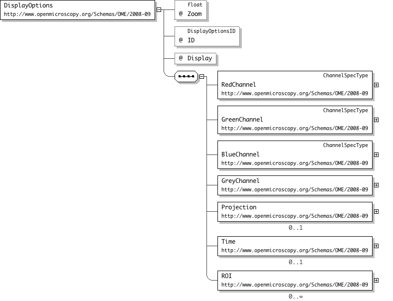

Open Microscopy Environment
OME XML Schema February 2008 - Update Version 2 May 2008
Author: Ilya G. Goldberg, Andrew J Patterson
Copyright 2002 - 2008 OME. All rights reserved.
The wave number, black level, white level and optional gamma for the blue channel of an RGB image.
Pixel values between BlackLevel and WhiteLevel will be assigned values 0-255, respectively.
Values below BlackLevel or above WhiteLevel will be assigned 0 and 255 respectively.
'The black level is used to scale pixel values to an 8 bit colorspace for display. For example, a 16 bit pixel value must be downscaled to fit an 8 bit display. Any pixel value below the black value will be set to the minimum value of the scale range (0). Because the file schema offers support for non-integer pixel types, this is stored as a floating point number to offer maximum generality. Specifying a decimal value for an integer pixel type is ill defined. Valid range of values for black level is less than the white level and within the data range for the pixel type.'
'The white level is used to scale pixel values to an 8 bit colorspace for display. For example, a 16 bit pixel value must be downscaled to fit an 8 bit display. Any pixel value above the white value will be set to the maximum value of the scale range (255). Because the file schema offers support for non-integer pixel types, this is stored as a floating point number to offer maximum generality. Specifying a decimal value for an integer pixel type is ill defined. The valid range for white level is greater than the black level and within the data range for the pixel type.'
Logical Channels are composed of ChannelComponents. The Index attribute is an index into the channel dimension of the 5-D pixel array.
If the Logical Channel specified by LogicalChannel has a PhotometricInterpretation attribute, then the ColorDomain attribute specifies which color channel
this ChannelComponent belongs to. For example 'R' for an 'RGB' PhotometricInterpretation.
'Specifies which component of Photometric Interpretation to map a channel component to. i.e. w/ RGB this could be \'R\', \'G\', \'B\' This can be null if a channel maps to a logical channel but is not included in the photometric interpretation. If this was null then the channel specified would normally be ignored.'
The Contact element describes the contact person for a group of experimenters - typically a project leader or lab manager.
This person is specified as a reference to an OME experimenter.
An element specifying a collection of images that are always processed together.
Images can belong to more than one Dataset, and a Dataset may contain more than one Image.
Images contain one or more DatasetRef elements to specify what datasets they belong to.
Once a Dataset has been processed in any way, its collection of images cannot be altered.
Whether or not the list of Images in this dataset can be altered is specified by the Locked attribute.
The ExperimenterRef and GroupRef elements specify the person and group this Dataset belongs to.
Projects may contain one or more Datasets, and Datasets may belong to one or more Projects.
This relationship is specified by listing ProjectRef elements within the Dataset element.
The DatasetRef element refers to a Dataset by specifying the Dataset ID attribute.
One or more DatasetRef elements may be listed within the Image element to specify what Datasets
the Image belongs to.
Just some free-form text to describe Images, Screens and Projects.
The content model is now String.
This is no longer the correct place for an XML sub-document
Either
- use CustomAttributes instead
Or
- define your own xml tree outside the OME node and link to the OME objects using references to the IDs
The type of detector used to capture the image.
The Detector ID can be used as a reference within the LogicalChannel element in the Image element.
The Type attribute can be set to 'CCD','Intensified-CCD','Analog-Video','PMT','Photodiode','Spectroscopy','Life-time-Imaging','Correlation-Spectroscopy','FTIR'.
Added new types EM-CCD, APD, and CMOS - ajp
Added new optional attributes AmplificationGain and Zoom - ajp
Logical Diagram
XML Instance Representation
<Detector Manufacturer="xsd:string[0..1]" Model="xsd:string[0..1]" SerialNumber="xsd:string[0..1]" Gain="xsd:float[0..1]" Voltage="xsd:float[0..1]" Offset="xsd:float[0..1]" Zoom="xsd:float[0..1]" AmplificationGain="xsd:float[0..1]" ID="DetectorID[1]" Type="xsd:string (value comes from list: {'CCD'|'IntensifiedCCD'|'AnalogVideo'|'PMT'|'Photodiode'|'Spectroscopy'|'LifetimeImaging'|'CorrelationSpectroscopy'|'FTIR'|'EM-CCD'|'APD'|'CMOS'|'Unknown'})[1]"/>
'The speed at which the detector can count pixels. Units of ReadOutRate is MHz. This is the bytes per second that can be read from the detector (like a baud rate).'
There is optionally one of these per Image. They provide support for the Origional OME Perl server.
This specifies mapping of image channel components to RGB or greyscale colorspace with one byte per pixel per RGB channel.
RedChannel, GreenChannel, BlueChannel, and GreyChannel specify the scaling of pixel values to 8-bit colorspace values.
Display indicates to display the image as Greyscale or RGB.
The Projection element specifies that the display is a maximum intensity projection.
The range of Z-sections for the projection is specified with the ZStart and ZStop attributes.
The Time element restricts the range of timepoints displayed.
The range of timepoints to display is specified by the TStart and TStop attributes.
The MIME type of the desired video format is specified by Movie's MIMEtype attribute.
The ROI element originally describes a 3-D region of interest. It now use the new ROI
model. It is up to the loader to convert the new ROI structure to the old format if
it is required. It is up to the viewer to either display the ROI only, or to simply
mark it somehow.
Logical Diagram

XML Instance Representation
<DisplayOptions Zoom="xsd:float[0..1]" ID="DisplayOptionsID[1]" Display="xsd:string (value comes from list: {'RGB'|'Grey'})[1]
'Specifies to display the image as greyscale or RGB'
This element describes the type of experiment. The required Type attribute must contain one or more entries from the following list:
FP FRET Time-lapse 4-D+ Screen Immunocytochemistry FISH Electrophysiology Ion-Imaging Colocalization PGI/Documentation
FRAP Photoablation Optical-Trapping Photoactivation Fluorescence-Lifetime Spectral-Imaging Other
FP refers to fluorescent proteins, PGI/Docuemntation is not a 'data' image.
The optional Description element may contain free text to further describe the experiment.
Added Type Photobleaching - ajp
Logical Diagram
XML Instance Representation
<Experiment Type="list of: [ xsd:string (value comes from list: {'FP'|'FRET'|'TimeLapse'|'FourDPlus'|'Screen'|'Immunocytochemistry'|'Immunofluorescence'|'FISH'|'Electrophysiology'|'IonImaging'|'Colocalization'|'PGIDocumentation'|'FluorescenceLifetime'|'SpectralImaging'|'Photobleaching'|'Other'}) ][1]" ID="ExperimentID[1]">
This element describes a person who performed an imaging experiment.
This person may also be a user of the OME system, in which case the OMEName element contains their login name.
Experimenters may belong to one or more groups which are specified using one or more GroupRef elements.
Note while FirstName, LastName, Email and OMEName are all optional to be valid an Experimenter must have AT LEAST ONE present
The Filament element is used to describe various kinds of filament bulbs such as Incadescent or Halogen.
The Power of the Filament is now stored in the LightSource.
Logical Diagram
XML Instance Representation
<Filament Type="xsd:string (value comes from list: {'Incandescent'|'Halogen'|'Unknown'})[1]"/>
A filter is either an excitation or emission filters.
There should be one filter element specified per wavelength in the image.
The channel number associated with a filter set is specified in LogicalChannel's required ChannelComponent element and its Index attribute.
It is based on the FilterSpec type, so has the required attributes Manufacturer, Model, and LotNumber.
It may also contain a Type attribute which may be set to
'LongPass', 'ShortPass', 'BandPass', or 'MultiPass'.
It can be associated with an optional FilterWheel - Note: this is not the same as a FilterSet
Logical Diagram
XML Instance Representation
<Filter Manufacturer="xsd:string[1]" Model="xsd:string[1]" LotNumber="xsd:string[0..1]" Type="xsd:string (value comes from list: {'LongPass'|'ShortPass'|'BandPass'|'MultiPass'})[0..1]" FilterWheel="xsd:string[0..1]
'A filter \'wheel\' in OME can refer to any arrangement of filters in a filter holder of any shape. It could, for example, be a filter slider.'
The wave number, black level, white level and optional gamma for the green channel of an RGB image.
Pixel values between BlackLevel and WhiteLevel will be assigned values 0-255, respectively.
Values below BlackLevel or above WhiteLevel will be assigned 0 and 255 respectively.
'The black level is used to scale pixel values to an 8 bit colorspace for display. For example, a 16 bit pixel value must be downscaled to fit an 8 bit display. Any pixel value below the black value will be set to the minimum value of the scale range (0). Because the file schema offers support for non-integer pixel types, this is stored as a floating point number to offer maximum generality. Specifying a decimal value for an integer pixel type is ill defined. Valid range of values for black level is less than the white level and within the data range for the pixel type.'
'The white level is used to scale pixel values to an 8 bit colorspace for display. For example, a 16 bit pixel value must be downscaled to fit an 8 bit display. Any pixel value above the white value will be set to the maximum value of the scale range (255). Because the file schema offers support for non-integer pixel types, this is stored as a floating point number to offer maximum generality. Specifying a decimal value for an integer pixel type is ill defined. The valid range for white level is greater than the black level and within the data range for the pixel type.'
The wave number, black level, white level and optional gamma for a greyscale image.
The GreyChannel element may contain an optional ColorMap attribute, which can be set to 'Greyscale', 'Spectrum' or 'Blackbody'
Pixel values between BlackLevel and WhiteLevel will be assigned values 0-255, inclusive.
Values below BlackLevel or above WhiteLevel will be assigned 0 and 255 respectively.
'The black level is used to scale pixel values to an 8 bit colorspace for display. For example, a 16 bit pixel value must be downscaled to fit an 8 bit display. Any pixel value below the black value will be set to the minimum value of the scale range (0). Because the file schema offers support for non-integer pixel types, this is stored as a floating point number to offer maximum generality. Specifying a decimal value for an integer pixel type is ill defined. Valid range of values for black level is less than the white level and within the data range for the pixel type.'
'The white level is used to scale pixel values to an 8 bit colorspace for display. For example, a 16 bit pixel value must be downscaled to fit an 8 bit display. Any pixel value above the white value will be set to the maximum value of the scale range (255). Because the file schema offers support for non-integer pixel types, this is stored as a floating point number to offer maximum generality. Specifying a decimal value for an integer pixel type is ill defined. The valid range for white level is greater than the black level and within the data range for the pixel type.'
" Gamma="xsd:float[0..1]" isOn="xsd:boolean[0..1]" ColorMap="xsd:string (value comes from list: {'Greyscale'|'Spectrum'|'Blackbody'})[0..1]"/>
The Group ID and Name attributes are required.
Contact information should be specified for the leader of the group and a contact person.
The Leader and/or Contact are themselves experimenters defined in OME, but they need not have OMENames.
This element describes the actual image and its meta-data.
The elements that are references (ending in Ref) refer to elements defined outside of the Image element.
If any of the required Image attributes are missing, its guaranteed to be an invalid document.
The required elements are CreationDate and Pixels.
ExperimenterRef is required for all Images with well formed LSIDs.
ImageType is a vendor-specific designation of the type of image this is.
Examples of ImageType include 'STK', 'SoftWorx', etc.
The Name attributes are in all cases the name of the element instance. In this case, the name of the image,
not necessarily the filename.
PixelSize* is in microns.
TimeIncrement is used for time series that have a global timing specification instead of per-timepoint timing info.
For example in a video stream. The unit is seconds.
Similarly, WaveStart and WaveIncrement are used in spectral images like FTIR. These are both positive integers.
'More than one Pixels element may be associated with an Image. An Image will however have one \"primary\" set of Pixels specified with this attribute.'
The organizing structure that people belong to other than groups. A university, or company, etc.
We do not specify a department element, and do not mean for Institution to be used in this way.
We simply wish to say XXX at YYY. Where YYY has a better chance of being tied to a geographically fixed location
and of being more recognizable than a group of experimenters.
This element describes the instrument used to capture the Image.
It is primarily a container for manufacturer's model and catalog numbers for the
Microscope, LightSource, Detector, Objective and Filters components.
Additionally, one or more OTF elements may be specified, describing the optical transfer function under different conditions.
The Objective element contains the additional elements LensNA and Magnification.
The Filters element can be composed either of separate excitation, emission filters and a dichroic mirror
or a single filter set. Within the Image itself, a reference is made to this one Filter element.
The OTF element contains an optical transfer function.
The same OTF can be used for all wavelengths, or there may be one per wavelength.
There may be multiple light sources, detectors, objectives and filters on a microscope.
Each of these has their own ID attribute, which can be referred to from LogicalChannel.
It is understood that the light path configuration can be different for each channel,
but cannot be different for each timepoint or each plane of an XYZ stack.
Laser types are specified using two attributes - the Type and the lasing medium (Medium). Type is a string which may be set to:
'Excimer','Gas','Metal Vapor','Solid State','Dye','Semiconductor', or 'Free Electron'. The Medium attribute specifies the actual lasing medium
for a given laser type (for example, 'Nd-YAG'). Additionally, the Wavelength (in nm), whether or not the laser is Tuneable, and any FrequencyMultiplication that may be specified.
The Pulse attribute can be set to 'CW' (Continuous Wave),','Single','Q-Switched','Repetitive','Mode-Locked'.
The Power attribute specifies the nominal laser power in watts.
The Laser element may contain a Pump sub-element which refers to a LightSource used as a laser pump.
Removed Power - ajp
Added RepetitionRate - The is the rate in Hz at which the laser pulses. ajp
Added PockelCell attribute - ajp
Logical Diagram
XML Instance Representation
<Laser Type="xsd:string (value comes from list: {'Excimer'|'Gas'|'MetalVapor'|'SolidState'|'Dye'|'Semiconductor'|'FreeElectron'|'Unknown'})[1]" LaserMedium="LaserMedia[1]" Wavelength="xsd:positiveInteger[0..1]" FrequencyMultiplication="xsd:positiveInteger[0..1]" Tuneable="xsd:boolean[0..1]" Pulse="xsd:string (value comes from list: {'CW'|'Single'|'QSwitched'|'Repetitive'|'ModeLocked'})[0..1]" PockelCell="xsd:boolean[0..1]" RepetitionRate="xsd:boolean[0..1]
'The is the rate in Hz at which the laser pulses if the Pulse type is \'Repetitive\''
The lightsource for the instrument. An instrument may have several light sources.
The type of lightsource is specified by one of the child-elements which are 'Laser', 'Filament', 'Arc' or 'LightEmittingDiode'.
Each of the light source types has its own Type attribute to further differentiate the light source
(eg, Nd-YAG for Laser or Hg for Arc).
A LightSource ID must be specified for each light source,
and the individual light sources can be referred to by their LightSource IDs (eg from LogicalChannel).
Lasers may have a Pump sub-element which refers to another LightSource used as a laser pump.
Moved Power into LightSource from Laser - ajp
There must be one per channel in the Image, even for a single-plane image. In OME, Channels (e.g. 'FITC', 'Texas Red', etc) are specified as Logical Channels,
And information about how each of them was acquired is stored in the various optional *Ref elements. Each Logical Channel is composed of one or more
ChannelComponents. For example, an entire spectrum in an FTIR experiment may be stored in a single Logical Channel with each discrete wavenumber of the spectrum
constituting a ChannelComponent of the FTIR Logical Channel. An RGB image where the Red, Green and Blue components do not reflect discrete probes but are
instead the output of a color camera would be treated similarly - one Logical channel with three ChannelComponents in this case.
The total number of ChannelComponents for a set of pixels must equal SizeC.
The SamplesPerPixel attribute is the number of channel components in the logical channel.
The IlluminationType attribute is a string enumeration which may be set to 'Transmitted', 'Epifluorescence', 'Oblique', or 'NonLinear'.
The optional PinholeSize attribute allows specifying adjustable pin hole diameters for confocal microscopes.
The PhotometricInterpretation attribute is used to describe how to display a multi-component channel. This attribute may be set to:
'monochrome', 'RGB', 'ARGB', 'CMYK', 'HSV'. The default for single-component channels is 'monochrome'.
The Mode attribute describes the type of microscopy performed for each channel. This may be set to:
'Wide-field','Wide-field','Laser Scanning Microscopy','Laser Scanning Confocal','Spinning Disk Confocal','Slit Scan Confocal','Multi-Photon Microscopy',
'Structured Illumination','Single Molecule Imaging','Total Internal Reflection','Fluorescence-Lifetime','Spectral Imaging',
'Fluorescence Correlation Spectroscopy','Near Field Scanning Optical Microscopy','Second Harmonic Generation Imaging'.
The ContrastMethod attribute may be set to 'Brightfield','Phase','DIC','Hoffman Modulation','Oblique Illumination','Polarized Light','Darkfield','Fluorescence'.
The ExWave, EmWave and Fluor attributes allow specifying the nominal excitation and emission wavelengths and the type of fluor being imaged in a particular channel.
The Fluor attribute is used for fluorescence images, while the Name attribute is used to name channels that are not imaged using fluorescence techniques.
The user interface logic for labeling a given channel for the user should use the first existing attribute in the following sequence:
Name -> Fluor -> EmWave -> ChannelComponent/Index.
The NDfilter attribute is used to specify (in O.D. units) the combined effect of any neutral density filters used.
Logical Diagram
XML Instance Representation
<LogicalChannel ID="LogicalChannelID[1]" Name="xsd:string[0..1]" SamplesPerPixel="xsd:integer[0..1]" SecondaryEmissionFilter="FilterID[0..1]" SecondaryExcitationFilter="FilterID[0..1]" IlluminationType="xsd:string (value comes from list: {'Transmitted'|'Epifluorescence'|'Oblique'|'NonLinear'})[0..1]
'Attribute is called Illumination in EA diagram - ajp Added NonLinear - ajp'
" PinholeSize="xsd:float[0..1]" PhotometricInterpretation="xsd:string (value comes from list: {'Monochrome'|'RGB'|'ARGB'|'CMYK'|'HSV'|'ColorMap'})[0..1]
'To Do - Add more documentation - ajp Added ColorMap - ajp'
" Mode="xsd:string (value comes from list: {'WideField'|'LaserScanningMicroscopy'|'LaserScanningConfocal'|'SpinningDiskConfocal'|'SlitScanConfocal'|'MultiPhotonMicroscopy'|'StructuredIllumination'|'SingleMoleculeImaging'|'TotalInternalReflection'|'FluorescenceLifetime'|'SpectralImaging'|'FluorescenceCorrelationSpectroscopy'|'NearFieldScanningOpticalMicroscopy'|'SecondHarmonicGenerationImaging'|'Other'})[0..1]" ContrastMethod="xsd:string (value comes from list: {'Brightfield'|'Phase'|'DIC'|'HoffmanModulation'|'ObliqueIllumination'|'PolarizedLight'|'Darkfield'|'Fluorescence'})[0..1]" ExWave="xsd:positiveInteger[0..1]" EmWave="xsd:positiveInteger[0..1]" Fluor="xsd:string[0..1]" NdFilter="xsd:float[0..1]" PockelCellSetting="xsd:integer[0..1]">
'This is true if the pixel data was written in BigEndian order. This is dependent on the system architecture of the machine that wrote the pixels. True for essentially all modern CPUs other than Intel and Alpha. All pixel data must be written in the same endian order.'
Defines a microbeam operation type and the region of the image it was applied to.
The LightSourceRef element is a reference to a LightSource specified in the Instrument element which was used for a technique other than illumination for
the purpose of imaging. For example, a laser used for photobleaching.
Logical Diagram
XML Instance Representation
<MicrobeamManipulation ID="MicrobeamManipulationID[1]" Type="list of: [ xsd:string (value comes from list: {'FRAP'|'Photoablation'|'Photoactivation'|'Uncaging'|'OpticalTrapping'|'Other'}) ][1]">
<Microscope Manufacturer="xsd:string[0..1]" Model="xsd:string[0..1]" SerialNumber="xsd:string[0..1]" Type="xsd:string (value comes from list: {'Upright'|'Inverted'|'Dissection'|'Electrophysiology'|'Unknown'})[1]"/>
The OME element is a container for all information objects accessible by OME. These information objects include descriptions of the imaging experiments
and the people who perform them, descriptions of the microscope, the resulting images and how they were acquired, the analyses performed on those images,
and the analysis results themselves.
An OME file may contain any or all of this information.
The optical transfer function. FilterSetRef refers to the set of filters used in computing the OTF.
BitsPerPixel is an integer '1', '8', '16'.
The OpticalAxisAveraged is a boolean specifying whether or not optical axis averaging was done.
SizeX, SizeY specify the width and height of the OTF.
This element must contain a BinData element containing the Base64-encoded OTF.
Both of these work the same way as they do for the Data element within Image.
A description of the microscope's objective lens.
Required elements include the lens numerical aperture,
and the magnification, both of which a floating
point (real) numbers.
The values are those that are fixed for a particular
objective: either because it has been manufactured to
this specification or the value has been measured on
this particular objective.
Correction: This is the type of correction coating applied to this lens.
Immersion: This is the types of immersion medium the lens is designed to
work with. It is not the same as 'Medium' in ObjectiveRef (a
single type) as here Immersion can have compound values like 'Multi'.
LensNA: The numerical aperture of the lens (as a float)
NominalMagnification: The specified magnification e.g. x10
CalibratedMagnification: The measured magnification e.g. x10.3
WorkingDistance: WorkingDistance of the lense. The Units are um.
This holds the setting applied to an objective as well as a
reference to the objective.
The ID is the objective used in this case.
The CorrectionCollar is it normal an adjustable ring on the
objective. Each has an arbitrary scale on it so the values
is unit-less.
The Medium is the actual immersion medium used in this case.
The RefractiveIndex is that of the immersion medium. This is
a ratio so it also unit-less.
The Image will be unreadable if any of the required Pixel attributes are missing.
The Pixels themselves are stored within the file compressed by plane, and encoded in Base64.
The Pixels element must contain a list of BinData, each containing a single plane of pixels.
These Pixels elements, when read in document order, must produce a 5-D pixel array
of the size specified in this element, and in the dimension order specified by 'DimensionOrder'.
Logical Diagram
XML Instance Representation
<Pixels ID="PixelsID[1]" DimensionOrder="xsd:string (value comes from list: {'XYZCT'|'XYZTC'|'XYCTZ'|'XYCZT'|'XYTCZ'|'XYTZC'})[1]" PixelType="PixelTypes[1]" BigEndian="xsd:boolean[1]
'This is true if the pixel data was written in BigEndian order. This is dependent on the system architecture of the machine that wrote the pixels. True for essentially all modern CPUs other than Intel and Alpha. All pixel data must be written in the same endian order.'
'This optional element is a hash of the plane\'s image data. It is a choice between all the support hash types. Currently the only method supported is SHA1.'
The Project ID and Name attributes are required.
Datasets can be grouped into projects using a many-to-many relationship.
A Dataset may belong to one or more Projects by including one or more ProjectRef elements which refer to Project IDs.
Projects do not directly contain images - only by virtue of containing datasets, which themselves contain images.
There may be one or more of these in a Dataset.
This empty element has a required Project ID attribute that refers to Projects defined within the OME element.
The presence of this element indicates the user wants to view the Image as a maximum intensity projection.
The ZStart and ZStop attributes are optional. If they are not specified, then the entire Z stack will be pro
z values are index from 0 to maxZ - 1
A four dimensional 'Region of Interest'. The Z and T coordinates are optional.
If they are not used, and the Image has more than one plane,
the entire set of planes is assumed to be included in the ROI.
Multiple ROIs may be specified.
Added ID - ajp
The wave number, black level, white level and optional gamma for the red channel of an RGB image.
Pixel values between BlackLevel and WhiteLevel will be assigned values 0-255, respectively.
Values below BlackLevel or above WhiteLevel will be assigned 0 and 255 respectively.
'The black level is used to scale pixel values to an 8 bit colorspace for display. For example, a 16 bit pixel value must be downscaled to fit an 8 bit display. Any pixel value below the black value will be set to the minimum value of the scale range (0). Because the file schema offers support for non-integer pixel types, this is stored as a floating point number to offer maximum generality. Specifying a decimal value for an integer pixel type is ill defined. Valid range of values for black level is less than the white level and within the data range for the pixel type.'
'The white level is used to scale pixel values to an 8 bit colorspace for display. For example, a 16 bit pixel value must be downscaled to fit an 8 bit display. Any pixel value above the white value will be set to the maximum value of the scale range (255). Because the file schema offers support for non-integer pixel types, this is stored as a floating point number to offer maximum generality. Specifying a decimal value for an integer pixel type is ill defined. The valid range for white level is greater than the black level and within the data range for the pixel type.'
The thumbnail may be an external URI reference specified by the href attribute, or it may contain an SVG sub-document
(denoted by the #wildCard 'element').
The MIMEtype is a required attribute, and must be set to 'SVG' if the tag's contents are an SVG document.
'Gives the number of IFDs affected. Dimension order of IFDs is given by the enclosing Pixels element\'s DimensionOrder attribute. Default is the number of IFDs in the TIFF file, unless an IFD is specified, in which case the default is 1.'
'This can be used when the IFDs are located in another file. The / (forward slash) is used as the path separator. A relative path is recommended. However an absolute path can be specified. Default is to use the file the ome-xml data has been pulled from. Note: It is permissible for this to be self referential. The file image1.tiff may contain ome-xml data that has FilePath=\"image1.tiff\" or \"./image1.tiff\"'
"> [0..1]
'This must be used when the IFDs are located in another file. Note: It is permissible for this to be self referential.'
The time range the user is interested in the initial viewer display. A range of timepoints indicates a movie
If they are not specified, the movie is to include all timepoints.
If the Time attributes point to a single time-point, that is the timepoint to be initially displayed.
If the entire element is missing, the first time-point will be displayed
t values are index from 0 to maxT - 1
'The black level is used to scale pixel values to an 8 bit colorspace for display. For example, a 16 bit pixel value must be downscaled to fit an 8 bit display. Any pixel value below the black value will be set to the minimum value of the scale range (0). Because the file schema offers support for non-integer pixel types, this is stored as a floating point number to offer maximum generality. Specifying a decimal value for an integer pixel type is ill defined. Valid range of values for black level is less than the white level and within the data range for the pixel type.'
'The white level is used to scale pixel values to an 8 bit colorspace for display. For example, a 16 bit pixel value must be downscaled to fit an 8 bit display. Any pixel value above the white value will be set to the maximum value of the scale range (255). Because the file schema offers support for non-integer pixel types, this is stored as a floating point number to offer maximum generality. Specifying a decimal value for an integer pixel type is ill defined. The valid range for white level is greater than the black level and within the data range for the pixel type.'
Reference is an empty complex type that is contained and extended by all the *Ref elements
Each *Ref element defines an attribute named ID of simple type *ID and any other information that is needed
Each simple type *ID is restricted to the base type LSID with an appropriate pattern
-- ajp
This is a unique ID for the file but does not conform to the ID pattern used in the rest of the file.
The rest of the IDs are either an full LSID or an internal ID which is a string that is simply unique in this file.
As the UniversallyUniqueIdentifier is used from outside this file to identify it having the same ID in another file could cause problems.
A UUID is 32 hexadecimal digits, in 5 groups, 8-4-4-4-12, separated by hyphens
e.g. urn:uuid:3e450fae-b8f2-4d35-aa54-702168b2487f
There are methods to generate these in most modern languages.
http://www.ietf.org/rfc/rfc4122.txt
The XML Instance Representation table above shows the schema component's content as an XML instance.
The minimum and maximum occurrence of elements and attributes are provided in square brackets, e.g. [0..1].
Model group information are shown in gray, e.g. Start Choice ... End Choice.
For type derivations, the elements and attributes that have been added to or changed from the base type's content are shown in bold.
If an element/attribute has a fixed value, the fixed value is shown in green, e.g. country="Australia".
Otherwise, the type of the element/attribute is displayed.
If the element/attribute's type is in the schema, a link is provided to it.
For local simple type definitions, the constraints are displayed in angle brackets, e.g. <<pattern = [1-9][0-9]{3}>>.
If a local element/attribute has documentation, it will be displayed in a window that pops up when the question mark inside the attribute or next to the element is clicked, e.g. <postcode>.
Abstract(Applies to complex type definitions and element declarations). An abstract element or complex type cannot used to validate an element instance. If there is a reference to an abstract element, only element declarations that can substitute the abstract element can be used to validate the instance. For references to abstract type definitions, only derived types can be used.
Collapse Whitespace PolicyReplace tab, line feed, and carriage return characters with space character (Unicode character 32). Then, collapse contiguous sequences of space characters into single space character, and remove leading and trailing space characters.
Disallowed Substitutions(Applies to element declarations). If substitution is specified, then substitution group members cannot be used in place of the given element declaration to validate element instances. If derivation methods, e.g. extension, restriction, are specified, then the given element declaration will not validate element instances that have types derived from the element declaration's type using the specified derivation methods. Normally, element instances can override their declaration's type by specifying an xsi:type attribute.
Nillable(Applies to element declarations). If an element declaration is nillable, instances can use the xsi:nil attribute. The xsi:nil attribute is the boolean attribute, nil, from the http://www.w3.org/2001/XMLSchema-instance namespace. If an element instance has an xsi:nil attribute set to true, it can be left empty, even though its element declaration may have required content.
Prohibited Derivations(Applies to type definitions). Derivation methods that cannot be used to create sub-types from a given type definition.
Prohibited Substitutions(Applies to complex type definitions). Prevents sub-types that have been derived using the specified derivation methods from validating element instances in place of the given type definition.
Replace Whitespace PolicyReplace tab, line feed, and carriage return characters with space character (Unicode character 32).
Substitution GroupElements that are members of a substitution group can be used wherever the head element of the substitution group is referenced.
Substitution Group Exclusions(Applies to element declarations). Prohibits element declarations from nominating themselves as being able to substitute a given element declaration, if they have types that are derived from the original element's type using the specified derivation methods.
Target NamespaceThe target namespace identifies the namespace that components in this schema belongs to. If no target namespace is provided, then the schema components do not belong to any namespace.